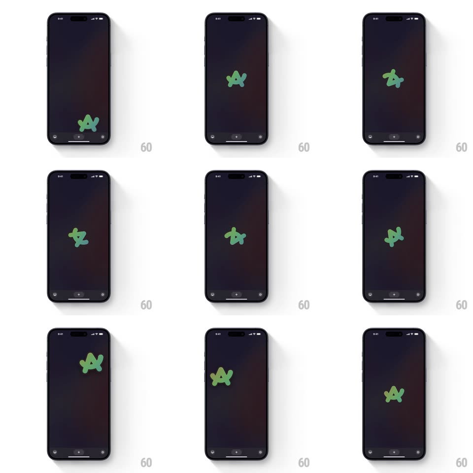

Media
Frame-by-frame

Rebuild this interaction 1:1: Arc Search's fidget-spinner logo - the green squiggle mark on the start screen spins with real physics when flicked, and can be dragged and released into a spin.

Rebuild this interaction 1:1: Arc Search's fidget-spinner logo - the green squiggle mark on the start screen spins with real physics when flicked, and can be dragged and released into a spin. ## Integration Integration: stack-agnostic spec - springs given as stiffness/damping, timed motions as duration + curve; map every value to your framework and animation library of choice. ## Scene Arc's dark start screen: the green squiggle logo centered on a near-black field with a faint warm glow, the tab bar at the bottom. The logo is a toy: flick it and it spins like a fidget spinner. ## Motion spec Pattern: inertial spin toy. - Drag on the logo: it rotates 1:1 with the finger's angular movement around its center, with a slight elastic lead (it leans into the drag direction ~5 degrees). - Release with velocity: the logo free-spins with angular friction - decays exponentially (halving ~every 1.2s), wobbling on its axis like a real bearing (+-2 degrees tilt at speed, settling as it slows). - A hard flick adds a satisfying clicky haptic at each quarter turn for the first second. - While spinning fast, the logo motion-blurs radially and its green brightens ~10%; as it decays below ~30 deg/s it snaps gently to the nearest rest orientation (spring ~260/24). - The logo can also be nudged off-center: it translates with the drag and springs back to center on release (~300/22), spinning down as it returns. - The background glow breathes faintly throughout (opacity +-8%, 6s loop), unaffected by the toy. ## Calibration - Friction curve is everything: a good flick should spin for 3-5 seconds, not 1 or 20. - Rotation pivot is the logo's visual centroid, which is not its bounding-box center - tune it. ## Reduced motion Drag rotates without inertia; no free spin. ## Don't miss - The squiggle is Arc's exact green mark; do not substitute a generic spinner. - Spin is planar (2D rotation with a tilt wobble), not a 3D card flip.